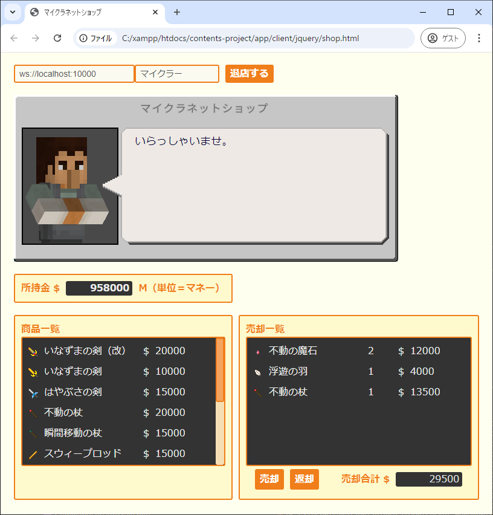
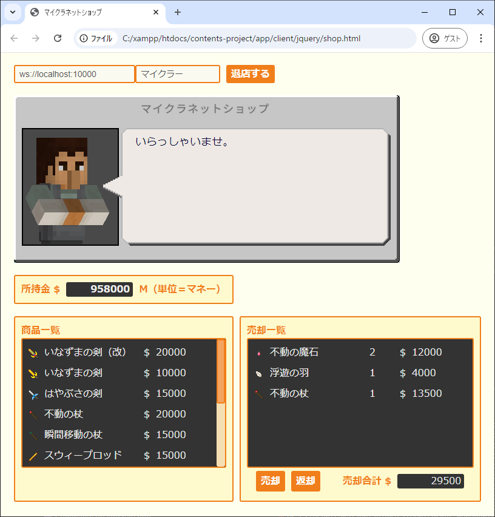
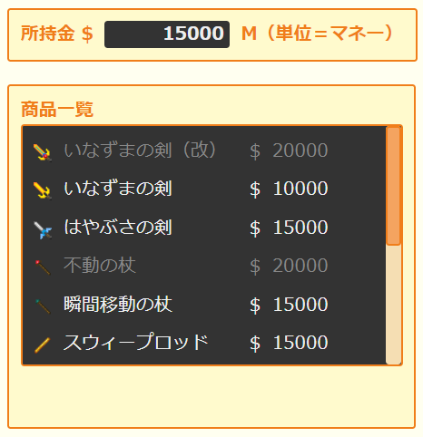
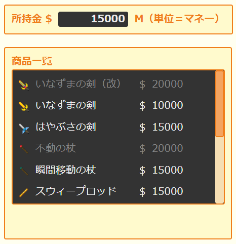

【ネットショップ】
はじめに
今回はワールド内で一つの経済圏を作っておきたかったので、マインクラフト内で使えるショップをWebブラウザで実装してみました。
以下は店内の画面イメージです。

現実世界と似たようなものですが、これを利用する事で無店舗運用が可能となります。
つまり、ワールド内に店舗を建築する必要はありません。
つまり、売り買いをするのに店舗へ赴く必要もありません。
ここではWebサーバーレスで使えるものを実装しているので今回は利用していませんが、Webブラウザが使えるという事はCGIも使えるという事です。
Websocket通信で使っているJavascriptも含めて色んなプログラミング言語が使えるので応用の幅が広がります。
※再生マークが付いている画像をクリックすると再生／停止が行えます。
以下は店内の画面イメージです。

現実世界と似たようなものですが、これを利用する事で無店舗運用が可能となります。
つまり、ワールド内に店舗を建築する必要はありません。
つまり、売り買いをするのに店舗へ赴く必要もありません。
ここではWebサーバーレスで使えるものを実装しているので今回は利用していませんが、Webブラウザが使えるという事はCGIも使えるという事です。
Websocket通信で使っているJavascriptも含めて色んなプログラミング言語が使えるので応用の幅が広がります。
※再生マークが付いている画像をクリックすると再生／停止が行えます。
入店方法
あらかじめWebsocketサーバーを起動した状態でマインクラフトからの接続を完了しておく必要があります。
マインクラフトからの接続手順については▶マインクラフトの環境のページをご覧ください。
ショップの画面を表示するのにWebブラウザを使いますが、マインクラフトからの接続は既存のWebsocketサーバーを通じてやり取りを行いますので、今回用に改めて接続する必要はありません。
ショップの画面はチャット画面と同じようにプロジェクト環境内の以下のファイルをWebブラウザへコピペしてご利用ください。
ショップ画面の所在
画面が表示できたら以下のようにマインクラフト側のユーザー名を入力して入店ボタンを押します。するとショップ用の鍵（南京錠）がマインクラフト側へ配布されますのでこれを右クリックすると入店できます。
※今回の場合「マイクラー」という名前がマインクラフト側から接続しているユーザー名です。

この時自分に入店の意思がない場合は南京錠を破棄してください。
身内で遊ぶ分にはそこまで管理しなくても問題ないと思いますが、この仕組みを利用する事でショップ側のなりすまし防止になります。
※同時に南京錠が複数配布されたり、身に覚えがないタイミングで南京錠が配布された場合には、まず”なりすまし”を疑ってください。
ちなみにサバイバルモードにしないとショップは利用できません。
クリエイティブモードの時に入店しようとすると以下のようにゲームモードの変更を促されますので、ここで「はい」を選ぶとショップ側が自動的にサバイバルモードへ変更した上で鍵を渡してくれます。

マインクラフトからの接続手順については▶マインクラフトの環境のページをご覧ください。
ショップの画面を表示するのにWebブラウザを使いますが、マインクラフトからの接続は既存のWebsocketサーバーを通じてやり取りを行いますので、今回用に改めて接続する必要はありません。
ショップの画面はチャット画面と同じようにプロジェクト環境内の以下のファイルをWebブラウザへコピペしてご利用ください。
ショップ画面の所在
/app
/client
/jquery
shop.html ショップ画面
画面が表示できたら以下のようにマインクラフト側のユーザー名を入力して入店ボタンを押します。するとショップ用の鍵（南京錠）がマインクラフト側へ配布されますのでこれを右クリックすると入店できます。
※今回の場合「マイクラー」という名前がマインクラフト側から接続しているユーザー名です。
この時自分に入店の意思がない場合は南京錠を破棄してください。
身内で遊ぶ分にはそこまで管理しなくても問題ないと思いますが、この仕組みを利用する事でショップ側のなりすまし防止になります。
※同時に南京錠が複数配布されたり、身に覚えがないタイミングで南京錠が配布された場合には、まず”なりすまし”を疑ってください。
ちなみにサバイバルモードにしないとショップは利用できません。
クリエイティブモードの時に入店しようとすると以下のようにゲームモードの変更を促されますので、ここで「はい」を選ぶとショップ側が自動的にサバイバルモードへ変更した上で鍵を渡してくれます。
アイテムの購入方法
所持金の範囲内であれば以下のように商品一覧のアイテムを購入する事ができます。

所持金が足りないアイテムがある場合は以下のようにグレーアウトされて選べません。

所持金が足りないアイテムがある場合は以下のようにグレーアウトされて選べません。

アイテムの売却方法
売却アイテムを右クリックすると以下のように売却一覧へ表示されます。
複数ある場合はまとめて一覧へ登録しておくといいでしょう。
※この時「売却合計」欄に現在一覧へ登録しているアイテムの売却価格の合計が表示されます。

売却したいアイテムの登録が終わったら「売却」ボタンを押して売却すると、売却価格の合計が所持金へ加算されます。

もし誤って登録してしまった場合は以下のように「返却」ボタンを押す事で登録したアイテムがマインクラフト側へ返却されます。

複数ある場合はまとめて一覧へ登録しておくといいでしょう。
※この時「売却合計」欄に現在一覧へ登録しているアイテムの売却価格の合計が表示されます。
売却したいアイテムの登録が終わったら「売却」ボタンを押して売却すると、売却価格の合計が所持金へ加算されます。
もし誤って登録してしまった場合は以下のように「返却」ボタンを押す事で登録したアイテムがマインクラフト側へ返却されます。
おわりに
金額のデータはマインクラフト内のスコアボードを利用しています。
商品一覧等のデータはsocket-managerフレームワーク内の設定ファイルで管理していますのでデータベースを使う必要はありません。
また、CGIを利用していないためApacheやNginxなどのWebサーバーも必要ありません（静的HTMLファイルが使えないモバイル接続の場合は必要になります）ので運用は比較的楽だと思います。
上述の通り金額データにはスコアボードを利用していますので、ワールドを切り替えると初期化されてゼロになります。
ワールド間で金額データを引き継ぎたい場合は、ワールドオーナーがメンバーのスコアボードをコマンドで設定してください。
マルチプレイユーザーがリモート接続の場合は▶コマンド送信機能を使って設定してあげてください。
※ショップの設定ファイルの詳細については▶設定ファイル内の「shop.php」の項目をご覧ください。
※所持金データのオブジェクト名はショップの設定ファイルに定義しています。
※アイテム価格は未だ調整中なので今後変更する可能性があります。
商品一覧等のデータはsocket-managerフレームワーク内の設定ファイルで管理していますのでデータベースを使う必要はありません。
また、CGIを利用していないためApacheやNginxなどのWebサーバーも必要ありません（静的HTMLファイルが使えないモバイル接続の場合は必要になります）ので運用は比較的楽だと思います。
上述の通り金額データにはスコアボードを利用していますので、ワールドを切り替えると初期化されてゼロになります。
ワールド間で金額データを引き継ぎたい場合は、ワールドオーナーがメンバーのスコアボードをコマンドで設定してください。
マルチプレイユーザーがリモート接続の場合は▶コマンド送信機能を使って設定してあげてください。
※ショップの設定ファイルの詳細については▶設定ファイル内の「shop.php」の項目をご覧ください。
※所持金データのオブジェクト名はショップの設定ファイルに定義しています。
※アイテム価格は未だ調整中なので今後変更する可能性があります。